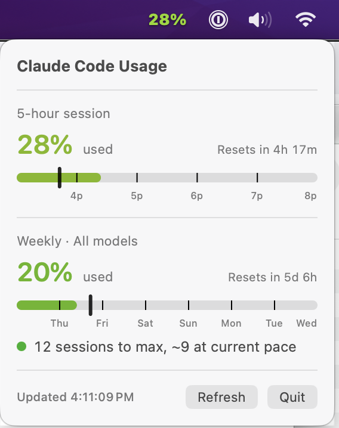
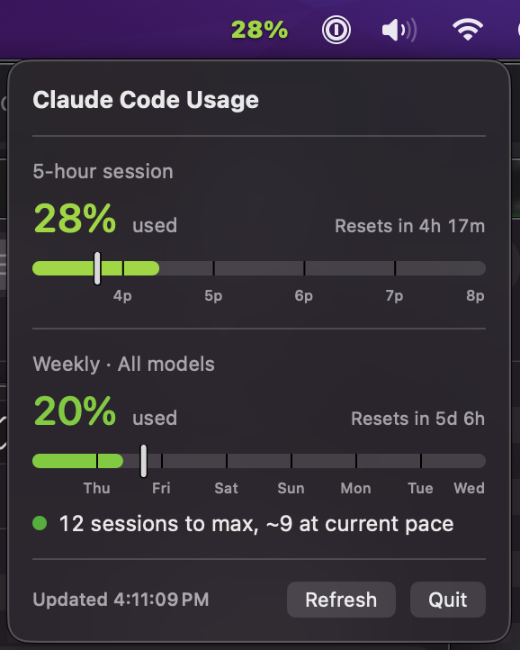

ClaudeUsage
See how much of your Claude plan you've used, at a glance, without opening a browser tab.


Requires macOS 14 (Sonoma) or later. Prefer to build it yourself? See building from source.
What it does
- Color-coded menubar percentage. A gradient from green to dark red keyed to how much of your current 5-hour session you've used — readable at a glance without clicking anything.
- 5-hour session and weekly windows. Straight from Anthropic's usage API — server-enforced numbers, not a local estimate. Each bar shows a reset countdown and gridlines aligned to real clock/calendar boundaries.
- Per-model weekly breakdowns. Opus, Sonnet, and other scoped models get their own weekly bar where your plan exposes them.
- Usage-attribution breakdown window. See which projects or sessions are driving your usage, not just the total.
- Headless
--jsonCLI. Script against your own usage — gate a long-running task on remaining quota, or wire it into an agent's own budget check.
Install
- Download the DMG above.
- Open it, then drag ClaudeUsage into Applications.
First launch on macOS
ClaudeUsage is self-signed rather than notarized under a paid Apple Developer ID, so macOS Gatekeeper will block the first open with an "unidentified developer" warning.
- Try to open the app — macOS will refuse and show a warning dialog.
- Open System Settings → Privacy & Security.
- Scroll down to the message about ClaudeUsage being blocked, and click Open Anyway.
Or skip the dialog entirely with one command in Terminal:
xattr -d com.apple.quarantine /Applications/ClaudeUsage.appWhy: this is an open-source app signed with a local, self-issued certificate rather than a $99/yr Apple Developer ID. The tradeoff buys you a free, transparent build in exchange for one extra click on first launch.
Connect your account
On first launch, the popover shows a Connect your Claude account screen instead of usage data.
- Click Open Anthropic sign-in — your browser opens Claude's OAuth consent page.
- Approve. You'll land on a page showing an authorization code.
- Copy the code, paste it into the app, and click Connect.
Tokens are stored in your local macOS Keychain and never leave your machine except in requests to Anthropic's own API — the app talks to nothing else.
Build from source
For developers who'd rather build than trust a downloaded binary — it's a small Swift package with no external dependencies.
git clone https://github.com/python2121/claude-usage.git
cd claude-usage
./install.shSee the README for code-signing setup, the LaunchAgent install, and update instructions.
CLI
A headless --json mode prints a usage snapshot and exits — useful for scripts and for gating agent work on remaining quota.
/Applications/ClaudeUsage.app/Contents/MacOS/ClaudeUsage --jsonIt's cache-first, so polling it costs no extra API traffic while the app is running. See the README for the full JSON schema and exit codes.